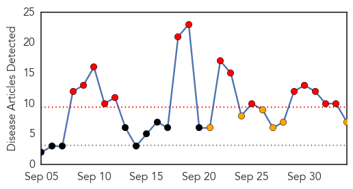
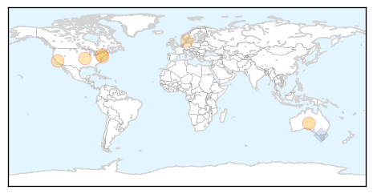
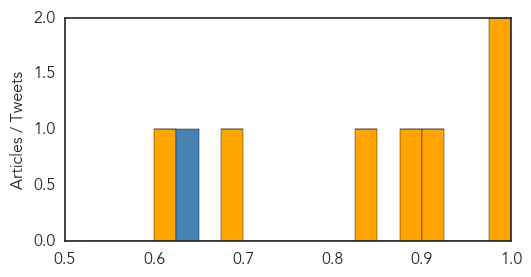
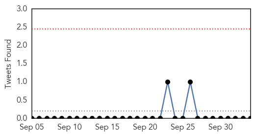
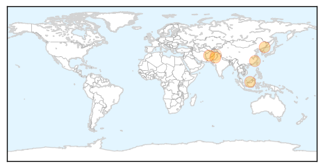

Influenza
30-Day Web Trend
15 alerts, 6 warnings

30-Day Twitter Trend
1 alerts, 0 warnings

Article Locations
Article Confidences
Top Articles:
- 0.985
- One Single Chart Will Make You Want To Get A Flu Shot Now
- 0.975
- 4-Year-Old New Jersey Boy Who Died Had Enterovirus: CDC
- 0.922
- California enterovirus-D68 cases jump to 14, five in greater Bay Area
- 0.884
- What to know about: flu season 2014
- 0.849
- Grundy County Health Department holding flu clinics
- 0.697
- What’s killing the seals of western Sweden?
- 0.606
- Enterovirus D-68 ruled as cause of death in Hamilton preschooler, officials say
Top Tweets:
- 0.639
- From 2004 to 2008, an average of 2,465 influenza cases were notified to Queensland Health each year. In 2009, there were 18,336 cases....
Dengue Fever
30-Day Web Trend
2 alerts, 8 warnings

30-Day Twitter Trend
0 alerts, 0 warnings

Article Locations
Article Confidences

Top Articles:
- 0.997
- Alarming state: Ten new dengue cases emerge in twin cities
- 0.981
- Dengue deaths in 2014 triple last year in Malaysia, case count tops 77,000
- 0.977
- Dengue spreading alarmingly in China: Report
- 0.915
- Dengue prevention: ‘Surveillance during Eid vital’
- 0.909
- Guangdong dengue fears reach fever pitch - Headlines, features, photo and videos from ecns.cn
- 0.520
- Rise in dengue cases: Campaign staff’s Eid leave cancelled
Top Tweets:
-
No tweets found for Oct 04, 2014